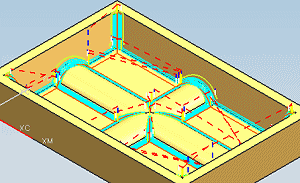
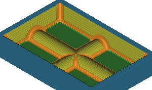
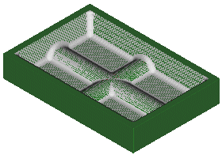

In this project you will:
Create a FLOWCUT_REF_TOOL operation to finish the corners and fillets using multiple passes.

Use Verify Tool Path to graphically simulate material removal for the entire program.

Compare the finished machined part to the original model.
